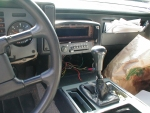
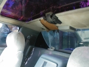
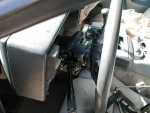
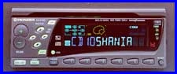

The interior is an '80's two tone gray. The interior is obviously very worn; missing speaker covers, worn speaker cover cloth, drivers seat torn, middle console no longer attached. Like the paint job it'll all have to wait till she runs nice.
The damn vandals! Damage listed below...:(
| Interior Repaired, Replaced, or Added. |
|  |  |  |
| Middle Console 800*600*xK |
Rear Headliner 800*600*xK |
Steering Column 800*600*xK |
| ***Damaged*** | |
|
10/24/2k1- repaired 10/25/2k1- installed shifter cover and framework support $--US 10min -fix 5min- installed |
Used a lighter to melt and restraighten the plastic that hold the shifter boot. Drilled out top and bottom poles that attack to the shifter consol. Used 2 bolts to hold it down. Now its not only fixed but easiler repaced w/o glue. |
| ***Stolen*** | |
|
10/20/2k1- obtained --/--/2k1- installed Radio/CD Player $50US 2min -obtained --min- installed |
While attending the first ever Florida Fiero Swap Meet I was able to obtain a few interiot iteams, Most notable a Radio; a Pioneer 34W * 4 CD deck (number DEH-P75DH) to be exact. I was walking around for about 10-15 mins. tryin to deside how much of my $100 I was ganna spend and BAM! saw this. kneeled down picked it up, read the box for about 30 sec. and ask: "how much for this radio?" the man answerd: "I'll sell it to you for $50" and no more had he said that I responed: "sold". Now as soon as I get the wireing adapter it'll be in the Fiero in no time flat. Hitch that up with 200W amp that I picked up for $13 and some Wal*Mart special speaker and I'll have a 1/2 decent system for under $125 buck. Man what a deal. I almost feel bad. Pioneer prices the deck at a lil over $400US...Mmmm sweat sounds a comming.

|
| ***Stolen*** | |
|
10/13/2k1- obtained --/--/2k1- installed AMP $13US 1/2Hr.- obtained --mins- installed |
Yes, you see right, I got an amp for $13 bucks. Not no 50Watt or even 100Watt one either. A 200W 2-channel Mystic amp. <Anyone know where there website is?> My rommmate/cousins freind had it in his hatchback civic. A few month agio he lost one of the channels and just disconnected it completly. I got it from him for the $13, thought I had to remove it. A half hour later it was out, and I found out why he lost the channel: one of the RCA male jacks had broken; simple enof to fix I told myslef. So that night I spent around 4 hours disassembling it carefull not to break anything and cleaning everything I could. I now await a chance to get ahold of some heatsink compound to reassemble it. AAa 200W os musical power. Not a bad start of a system if you ask me. Update: I got the heatsink compound from a site on the net and puthn the amp backtogether (no screws left over!). It's sitting in the Fiero now as I deside where to mount it. |